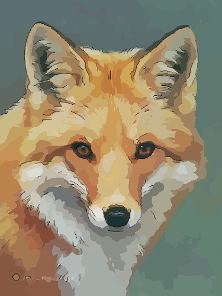

Volpe Sarda
Morfologia
Testa triangolare, muso appuntito, orecchie lunghe e dritte, occhi grandi con pupilla orizzontale. Tronco snello, coda folta e lunga. Pelliccia fulva o bruno-rossiccia sul dorso, ventre biancastro, coda bruno-grigiastra
Comportamento
Solitaria, territoriale e per lo più notturna, marca il territorio con le feci, l'urina e strofinandosi sulla vegetazione. Emette anche segnali sonori, simili a latrati e guaiti. Riproduzione tra gennaio e febbraio. La femmina, dopo 2-3 mesi, partorisce nella tana 3-8 piccoli, ciechi e inetti, allevati e accuditi dalla madre e talvolta dal padre. Cibo: roditori(40%), vegetali(20%), uova, uccelli, mammiferi, insetti e animali da cortile(40%)
Habitat
Specie adattabile, che predilige i boschi ma vive anche in campagna e città. Cacciabile